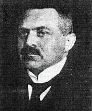
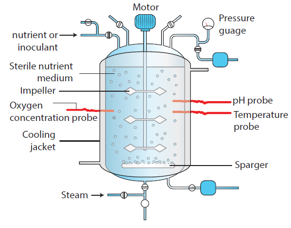

4.1 Development of Biotechnology
4.2 Methods of Biotechnology
4.3 Advancements in Modern Biotechnology
4.4 Tools for Genetic Engineering
4.5 Methods of Gene transfer
4.6 Screening for Recombiants
4.7 Transgenic Plants SLASH Genetically Modified Crops
4.8 Applications of Biotechnology.

Karl Ereky
Biotechnology is the science of applied biological processes. In other words, it is science of development and utilization of biological processes, forms and systems for the benefit of mankind and other life forms. The term biotechnology was coined by Karl Ereky, a Hungarian Engineer in 1919 and has been extended to include any process in which organisms, tissues, cells, organelles or isolated molecules such as enzymes are used to convert biological or other raw materials to products of greater value.
Biotechnology has developed by leaps and bounds during the past century and its development can be well understood under two main heads namely conventional or traditional biotechnology and modern biotechnology
This is the kitchen technology developed by our ancestors, and it is as old as human civilization. It uses bacteria and other microbes in the daily usage for preparation of dairy products like curd, ghee, cheese and in preparation of foods like idli, dosa, nan, bread and pizza. This conventional biotechnology also extends to preparation of alcoholic beverages like beer, wine, etc. With the advancement of the science and technology during the 18th century, these kitchen technologies gained scientific validation.
There are two main features of this technology, that differentiated it from the conventional technology they are i CLOSE BRACKET ability to change the genetic material for getting new products with specific requirement through recombinant DNA technology ii CLOSE BRACKET ownership of the newly developed technology and its social impact. Today, biotechnology is a billion-dollar business around the world, where in pharmaceutical companies, breweries, agro industries and other biotechnology-based industries apply biotechnological tools for their product improvement. Modern biotechnology embraces all methods of genetic modification by recombinant DNA and cell fusion technology. The major focus of biotechnology arew.
Fermentation for production of acids, enzymes, alcohols, antibiotics, fine chemicals, vitamins and toxins
Biomass for bulk production of single cell protein, alcohol, and biofuel
Enzymes as biosensors, in processing industry
Biofuels for production of hydrogen, alcohol, methane
Microbial inoculants as biofertiliser, and nitrogen fixers
Plant and animal cell culture for production of secondary metabolites, monoclonal antibodies
Recombinant DNA technology for production of fine chemicals, enzymes, vaccines, growth hormones,
antibiotics, and interferon
Process engineering – tools of biotechnology is used for effluent treatment, water recycling.
This unit will reveal the various aspects of modern biotechnology, its products and applications.
The word fermentation is derived from the Latin verb ‘fervere’ which means ‘ to boil’. Fermentation refers to the metabolic process in which organic molecules OPEN BRACKET normally glucose CLOSE BRACKET are converted into acids, gases, or alcohol in the absence of oxygen or any electron transport chain. The study of fermentation, its practical uses is called zymology and originated in 1856, when French chemist Louis Pasteur demonstrated that fermentation was caused by yeast. Fermentation occurs in certain types of bacteria and fungi that require an oxygenfree environment to live. The processes of fermentation are valuable to the food and beverage industries, with the conversion of sugar into ethanol to produce alcoholic beverages, the release of CO2 by yeast used in the leavening of bread, and with the production of organic acids to preserve and flavor vegetables and dairy products.
Bioreactor OPEN BRACKET Fermentor CLOSE BRACKET is a vessel or a container that is designed in such a way that it can provide an optimum environment in which microorganisms or their enzymes interact with a substrate to produce the required product. In the bioreactor aeration, agitation, temperature and pH are controlled. Fermentation involves two process namely upstream and downstream process.
All the process before starting of the fermenter such as sterilization of the fermenter, preparation and sterilization of culture medium and growth of the suitable inoculum are called upstream process.
All the process after the fermentation process is known as the downstream process. This process includes distillation, centrifuging, filtration and solvent extraction. Mostly this process involves the purification of the desired product.

Figure 4.1: Bioreactor
a. Depending upon the type of product, bioreactor is selected.
b. A suitable substrate in liquid medicine is added at a specific temperature, pH and then diluted.
c. The organism OPEN BRACKET microbe, animalSLASHplant cell, sub-cellular organelle or enzyme CLOSE BRACKET is added to it.
d. Then it is incubated at a specific temperature for the specified time.
e. The incubation may either be aerobic or anaerobic.
f. Withdrawal of product using downstream processing methods
Fermentation has industrial application such as:
1. Microbial biomass production
Microbial cells OPEN BRACKET biomass CLOSE BRACKET like algae, bacteria, yeast, fungi are grown, dried and used as source of a complete protein called ‘single cell protein OPEN BRACKET SCP CLOSE BRACKET’ which serves as human food or animal feed.
2. Microbial metabolites
Microbes produce compounds that are very useful to man and animals. These compounds called metabolites, can be grouped into two categories: